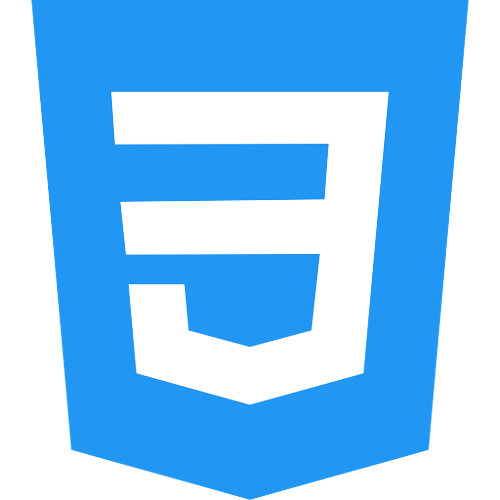
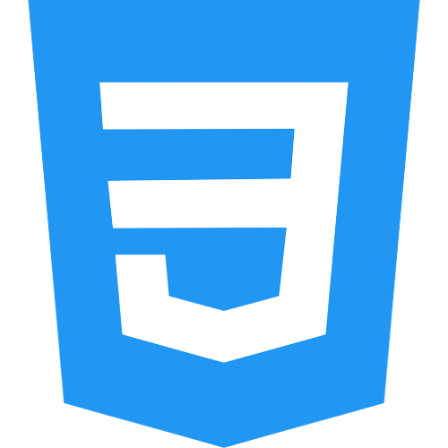
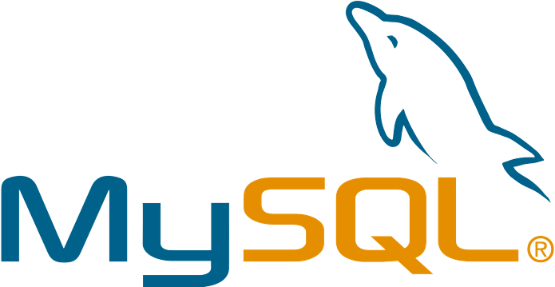
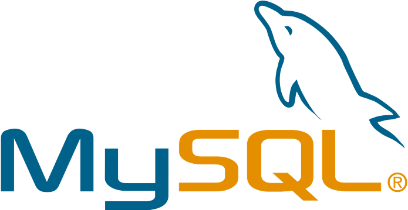

Dans ce Portfolio vous allez mieux me connaître
Par rapport a moi
Je m'appelle Fourti Rayan, je suis en BTS SIO option SLAM 2ème année
Mon cursus scolaire:
- Brevêt des Collèges(2018)
- Baccalauréat Général Spécialité Mathematiques/Physique-Chimie (2021)
- BTS Services Informatiques aux Organisations option SLAM (2022/En cours de formation)
Passioné d'informatique, j'ai voulût rejoindre ce cursus afin de pouvoir exercer dans ce domaine
- Voici mon CV, mon GitHub ainsi que mon TABLEAU DE SYNTHESEqui vous permtra de mieux me connaître
Mes compétences technique
 


 

Mes Projets
Mes Stages
PRÉSENTATION BTS SIO
Le BTS SIO (Services Informatiques aux Organisations) est un diplôme reconnu par l’état de niveau BAC+2. Il s’adresse à ceux qui souhaitent se former en deux ans aux métiers d’administrateur réseau ou de développeur pour intégrer directement le marché du travail ou continuer des études dans le domaine de l’informatique. Il existe deux options bien distinctes, l’option SLAM et l’option SISR
Les Options du BTS SIO
SISR: SOLUTIONS D’INFRASTRUCTURES SYSTÈMES ET RÉSEAU
L’option Solution d’infrastructure, systèmes et réseaux forme des professionnels des réseaux et équipements informatiques (installation, maintenance, sécurité). En sortant d’un BTS SIO SISR, vous serez capable de gérer et d’administrer le réseau d’une société et d’assurer sa sécurité et sa maintenance.
SLAM: SOLUTIONS LOGICIELLES ET APPLICATIONS MÉTIERS
L’option Solutions logicielles et applications métiers forme des spécialistes des logiciels (rédaction d’un cahier des charges, formulation des besoins et spécifications, développement, intégration au sein de la société).